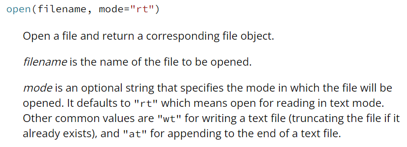
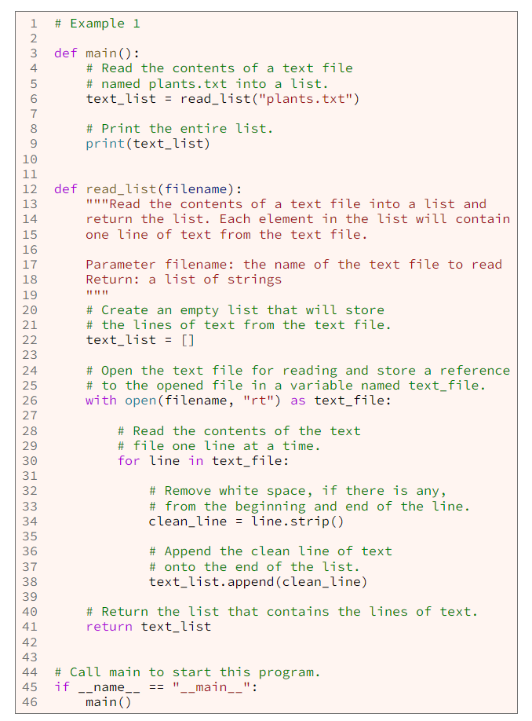
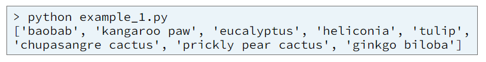
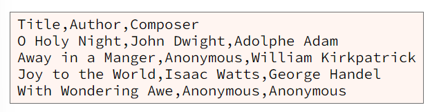
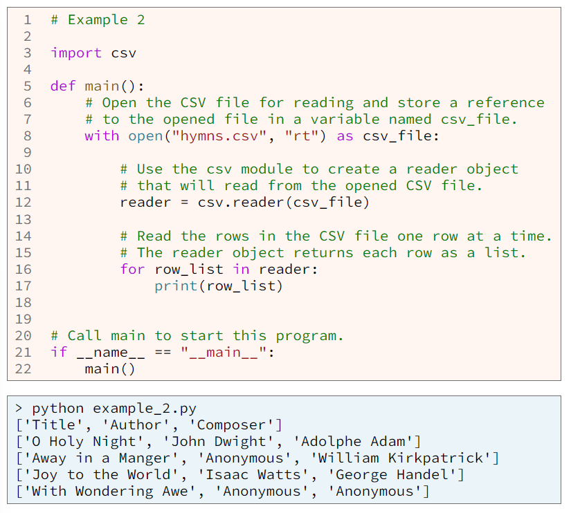
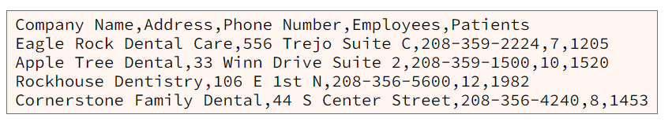
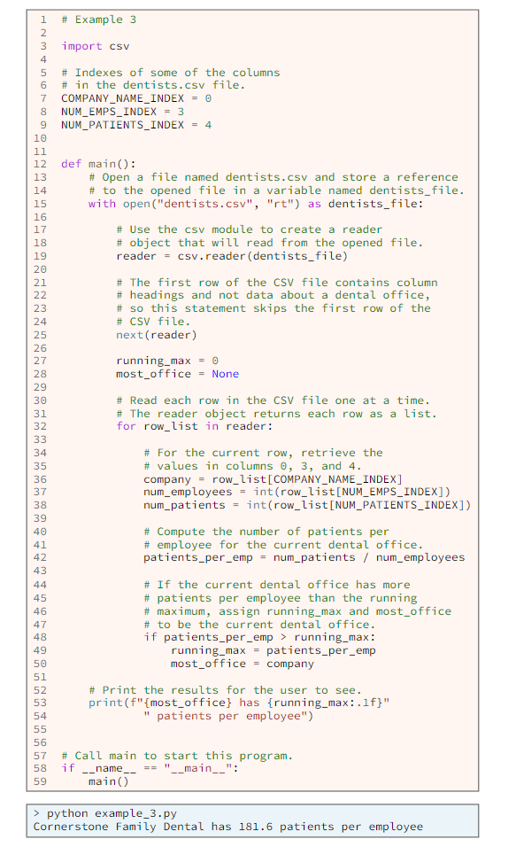
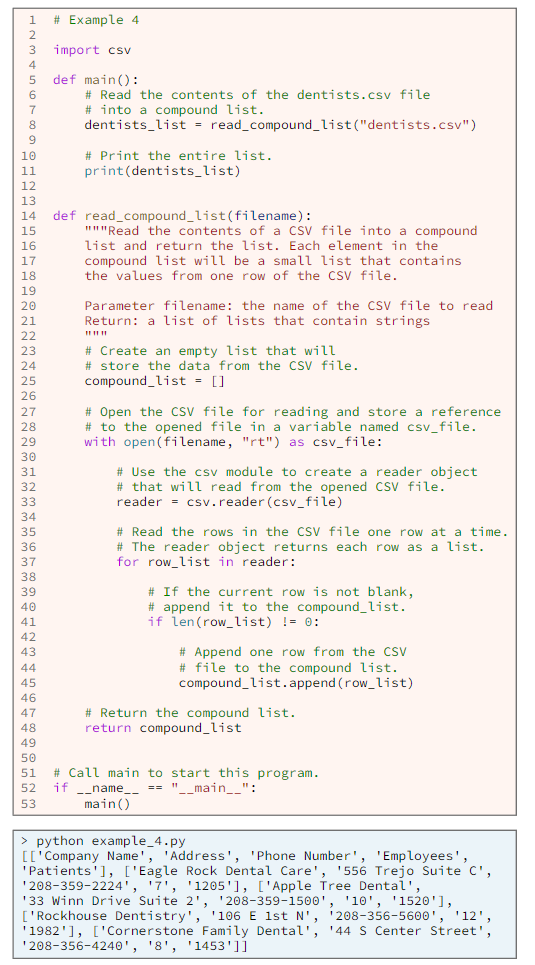
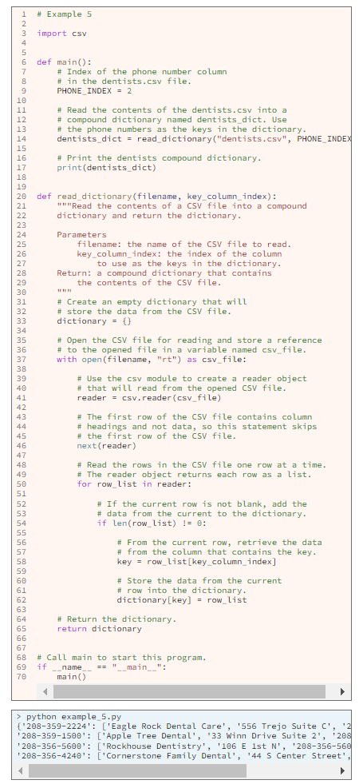

In order to read data from a text file, the file must exist on one of the computer's drives, and your program must do these three things:
The built-in open function opens a file for reading or writing. Here is an excerpt from the official documentation for the open function:
Example 1 contains a program that opens a text file named plants.txt for reading at line 26. At line 30 there is a for loop that reads the text in the file one line at a time and repeats the body of the for loop once once for each line of text in the file. in the body of the for loop at lines 32-38, the code removes surrounding white space, if there os any, from each line of text and then stores each line of text in a list.
 After the body of a for loop that reads from a file, we can write a call to the file.close method. However, when calling the open function, most programmers use a with block as shown in example 1 at line 26 and nest the for loop inside the with block as shown at lines 30-38. When the with block ends, the computer will automatically close the file, so that the programmer doesn't have to write a call to the file.close method.
Many computer systems import and export data in CSV files. CSV is an acronym for comma separated values. A CSV file is a text file that contains tabular data with each row on a separate line of the file and each cell (column) separated by a comma. The following example show the contents of a CSV file named "hymns.csv" that stores data about religious songs. Notice that the first row of the file contains column headings, the next four rows contain data about four hymns, and each row contains three columns separated by commas.
Python has a standard module named csvthat includes functionality to read from and write to CSV files. The program in example 2 shows how to open a CSV file and use the csv module to read the data and print it to a terminal window. In example 2 at line 8, there is a call to the Python built-in open function, which opens the hymns.csv file for reading. At line 12, the program creates a csv.reader object that will read from the hymns.csv file. Within the for loop at lines 16 and 17 the csv.reader reads and prints each row from the CSV file.
When a csv.reader reads a row from a CSV file, the reader returns the row as a list of strings. The output from example 2 shows that a csv.reader returns a list of strings. In the output, notice the five lists of strings, (strings surrounded by square brackets [...]) that were printed by the print statement at line 17. Notice also that the reader reads all the rows from a CSV file, including the first row, which contains column headings.
After reading each row from a CSV file, the for loop in the previous example simply prints the row list to a terminal window. Of course, a for loop can tdo much more than simply print each row. Consider the following CSV file named "dentists.csv" that stores data about dental offices. Notice that the first row of the file contains column headings, the next four rows contain data about four dental offices, and each row contains five columns separated by commas.
The program in example 3 processes each row in the dentists.csv file to determine which dental office has the most patients per employee. Notice that the first row of the dentists.csv file contains column headings. The headings contain no numbers and aren't needed for the calculations, so the program skips the first row by calling the built-in next function at line 25.
The program in example 3 reads and processes each row in a CSV file. That program needs to access the data in each row once only. If a program needs to access the contents of a CSV file multiple times, the program can read the contents of the file into a compound list and then access the data from the list. The program in example 4 contains a function named read_compound_list that reads the contents of a CSV file into a compound list.
If the values in one of the columns of CSV file are unique, then a program can read the contents of a CSV file into a compound dictionary and then use the dictionary to quickly find data. Recall that each item in a dictionary is a key vallue pair. The values from teh unique column in a CSV file will be the keys in the dictionary. The program in example 5 shows how to read the data from a CSV file into a compound dictionary. Notice in example 5, because of lines 9, 14, 58, and 62, that the program uses the dental office phone numbers as the keys in the dictionary.
